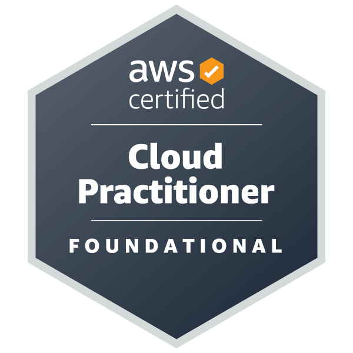
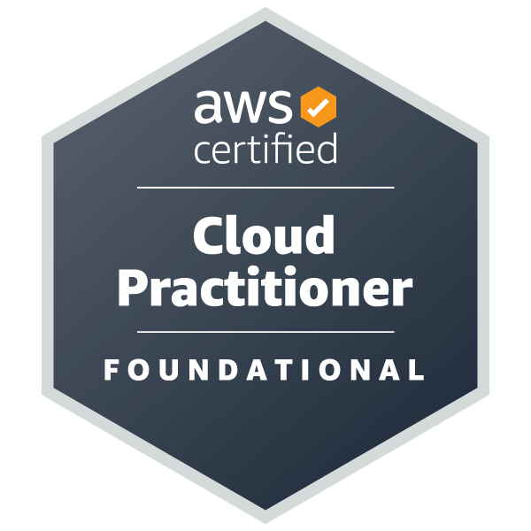

Education
May 2022
B.S. Computational Biology
Certificate: Data Sciences
Programming Languages
- Python
- R
- Java
- C++
- C#
- SQL
- JavaScript
- HTML
- CSS
Technologies
- Git
- Docker
- Linux
- PowerShell
- Bash/Shell Scripting
- Selenium
- .NET
- Azure
- Google Cloud Platform (GCP)
- AWS (Amazon Web Services)
- Splunk
- Dynatrace
- React
- Microsoft Office
Certifications
 


Work Experience
Tata Consultancy Services, Austin
- Support critical healthcare applications at Quest Diagnostics with a focus on maintaining regulatory compliance, data integrity, and operational stability.
- Monitor system health and performance using Splunk, proactively identifying and addressing issues before they impact end users.
- Collaborate closely with management to align technical support operations with business priorities and compliance frameworks.
- Act as a key escalation point within the team, demonstrating subject matter expertise and a strong understanding of healthcare IT environments.
Cognizant, Austin
- Utilized ServiceNow to promptly resolve incident tickets, meeting service level agreements with Cognizant and maintaining high standards of service delivery.
- Developed and implemented a program using Selenium and C# to automate labor-intensive manual processes, resulting in significant time savings and operational efficiency improvements at Quest Diagnostics.
- Conducted interviews and successfully onboarded over a dozen new members to the Life Sciences team, ensuring they were well-integrated into the company culture and fully equipped with the knowledge and resources needed to excel in their roles.
- Applied advanced data analysis techniques within Laboratory Information Management Systems (LIMS), leveraging Java and SQL to deliver tailored technical solutions to healthcare sector clients.
Citrix Systems Inc., Ft. Lauderdale, FL
- Assisted sales teams in pipeline development for virtualization products, enhancing lead generation and driving business growth.
- Provided direct support to B2B clients using Salesforce for sales operations, ensuring smooth integration and functionality.
- Worked closely with customer service and clients to resolve issues, ensuring high levels of customer satisfaction and fostering strong business relationships.
- Gained experience with Desktop as a Service (DaaS) applications on the Microsoft Azure cloud, supporting clients in adopting cloud-based solutions.
Research
Brett Baker Lab, Austin, TX
- Developed a package and an application in R to interpret DNA and protein sequences and visualize relationships between organisms.
Justin Havird Lab, Austin, TX
- 2021 Undergraduate Research Fellowship Awardee.
- Collected mussels in the field, sampled them, and conducted phylogenetic analyses.
- Focused on conserving endangered freshwater mussels and aiding conservation practices for the species: Strophitus Undulatus.
Projects
- I created bryanvernon.com to host my resume using the AWS Cloud.
- Some of the AWS Services I leveraged were:
- S3
- CloudFront
- Lambda
- DynamoDB
- API Gateway
- Route 53
- CodeCommit
- CodeDeploy
- This was a data competition hosted by kaggle.com where I finished in the top 10% of contestants.
- Used machine learning models to predict the probability of winning matchups in the 2025 NCAA March Madness Tournament.
- I also competed in 2023 and came in the top 25% of contestants.